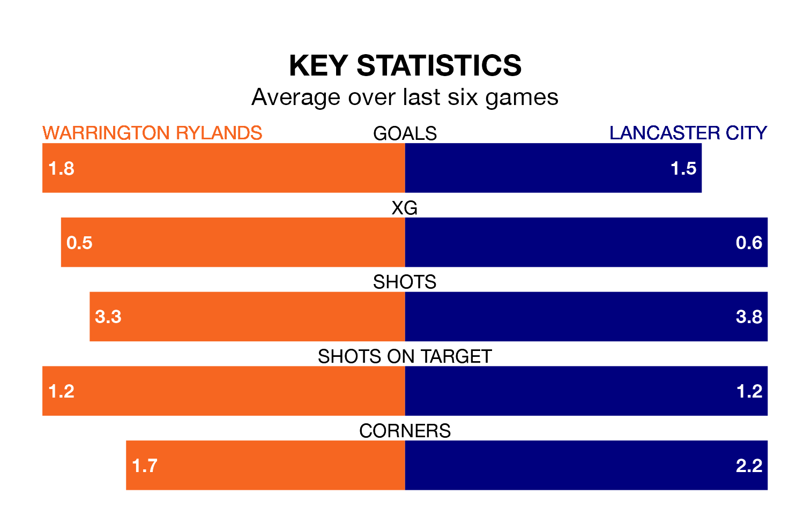

Warrington Rylands are on an excellent run ahead of hosting Lancaster City on Saturday, with 16 points collected from their last six games.
Warrington Rylands have picked up five wins and one draw in their last six Northern Premier League games, and face a Lancaster side whose last six games have brought three wins and three losses.
Warrington Rylands are third in the table after 36 games, of which they have won 19 and drawn 12, earning 69 points.
Lancaster are five places behind the home team in eighth, with 17 wins and eight draws putting them on 59 points.
With 54 goals in 37 games so far this season, City are scoring at below the league average rate with 1.5 goals per game. But they are conceding fewer than average too, letting in 52 goals at a rate of 1.4 per game.
Warrington Rylands, meanwhile, are average scorers, with 1.6 goals per game. They have conceded 1.0 goal per game.
In the last three years, Warrington Rylands and Lancaster have played each other on three occasions. They won one each, and they drew once.
Their last meeting was on October 28, when they played out a 0-0 draw.
Warrington Rylands's last match was on April 6, a 2-0 win against Guiseley.
Lancaster beat Gainsborough Trinity 2-1 last time out, also on April 6.
Updated: 10:01 (UTC), 12/04/24